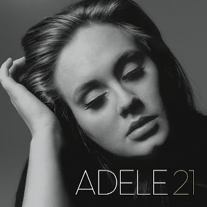
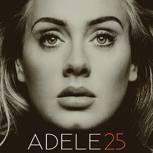

More About Adele Laurie Blue Adkins
History
Adele Laurie Blue Adkins was born on may 5 1988 in North London,England is a British Song-writer and began singing at the age of four, growing up she spent many days in Brockwell Park where she would play the guiter and sing to her friends. Adele graduated from the BRIT school for Performing Art and Technology in Croydon in May 2006. On the fourth month after graduating, she published two songs on the fourth issue of the online art website platforms Magazine.com.She had recorded a demo for a class project and had given it to a friend who then posted it on Myspace which led to a phone call from Richard Russell, boss of the music label XL Recordings.
Grammys and award Award
Adele has won Grammys award as well as an Oscar. she has won a total of 15 Grammy award in the year 2009,2012,2013 and 2017. She is known as the first artist in Grammy history to sweep the top three categories twice
| ...2009... | "Best New Artist" and also earned the Critics choice price at the BRIT Awards |
| ...2012... | Took home six wins including Album of the year |
| ...2013... | Best pop Solo performance, she also won a Golden globe award an Acadeemy award for skyfall |
| ...2017... | Took home Five Award as well as the best Pop solo Performance as wellas the best Pop Vocal Albums |
Top Songs and year
| Hometown Glory ... | 2008 |
| Chasing Pavement ... | 2009 |
| Don't you Remember ... | 2011 |
| Turning Tables ... | 2011 |
| Rolling in the deep... | 2011 |
| Someone like you ... | 2011 |
| Set fire to the rain ... | 2012 |
| Rumour Has it ... | 2012 |
| Skyfall ... | 2012 |
| Hello ... | 2015 |
| Send My Love (To Your New Lover) ... | 2016 |
| When We Were Young ... | 2016 |
| Easy on Me ... | 2021 |
POPULAR QUOTE

Release date: 28 January 2008, by XL Recording
After graduation from BRIT school in April 2006,she began publishing song and recorded a three song demo for a class project and gave it to a friend who posted the demo on MYSPACE, where it became very successful and led to interest from the record label
Albums Covers

Release date: 24 January,2011 by Columba Record
The album was age after their age of the singer during its production. The album explores themes of heartbreak,healing,intrispection and forgiveness

Release date: 20 November,2015 by Columba Record
The album is title as a reflection of her life and frame of mind at 25 years old and is termed a "make-up record"

Release date: 19 November,2021 by Columba Record
It was inspired by Adele's divorce,Motherhood,fame and heartache and expresses theme of acceptance and hope